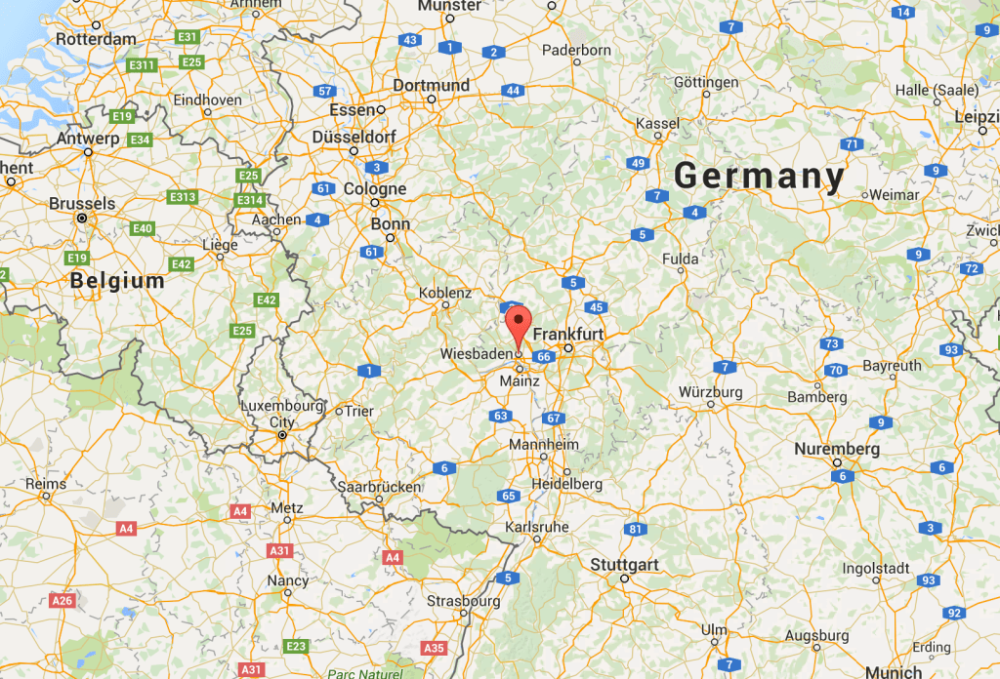

Original in Vitauts Take 19: The Package from Venezuela. Published in 30/11/2015.
A week or so ago, I came home from lunch and dad was a bit excited about the mail. I asked him what it was, and he showed me a package from Venezuela. “Who do you know in Venezuela,” I asked.
He looked at the name and thought aloud, “Guntars Gedulis… Guntars Gedulis…” He paused and said, “I knew him from the camps in Germany. We were in Wiesbaden together (see map).”
I was absolutely blown away. Here was this man that dad hadn’t seen in seventy years looking him up and sending him a package! How could Guntars even have found Vitauts after all this time? Dad said that the last time they saw each other was when they were about 18 years old. He didn’t have many stories to tell about Guntars, but just the mere fact that someone dad’s age was still alive and out there somewhere brought me hope. “What did he send you?”
He opened the package, took out a note and handed me three books. They were Latvian hymns written by Mr. Gedulis himself. He had sent the books to dad with a note that mentioned that these could be purchased for $3 apiece if he were interested in buying them for his church. Dad wasn’t interested, and, in fact, seemed a little put off. Here was this person contacting him from thousands of miles away, and he just wanted someone to buy his Latvian songbooks.
I told dad that maybe he should write back. Maybe he could get in touch with this guy and share stories. Again, dad didn’t seem interested. He responded with a “maybe” and walked back to his room.
I led him to my computer and started showing him old pictures of the German camps. I wanted to see if he could show me this Guntars fellow. He was amazed that I had all these old photos on my computer, “Where did you get these, I mean?” I told him that I scanned them in a long time ago. I don’t think he understood, but we finally found one photo that he said might be his friend Guntars.
“That one, there in middle. That may be him,” he said. He wasn’t 100% certain, but at least he felt somewhat confident that this photo was taken in Wiesbaden. But who knows?
I thought it was a fantastic story until I did a little research. I wanted to find out if this Guntars guy was really dad’s age and whether or not he was still alive. I found Guntars Gedulis, apparently a somewhat well-known Latvian singer/song writer. He was born in 1957, long after dad had already left for the United States. Who knows, maybe he is dad’s friends son?
Well, at least he has an inspirational quote, and it looks like he does some good work around with world with his music.
“Music is a window to a different, spiritual world; a bridge that brings us out of the everyday and joins us with the experience.” Guntars Gedulis
You can hear him talk here, and hear some real Latvian if you are interested!
